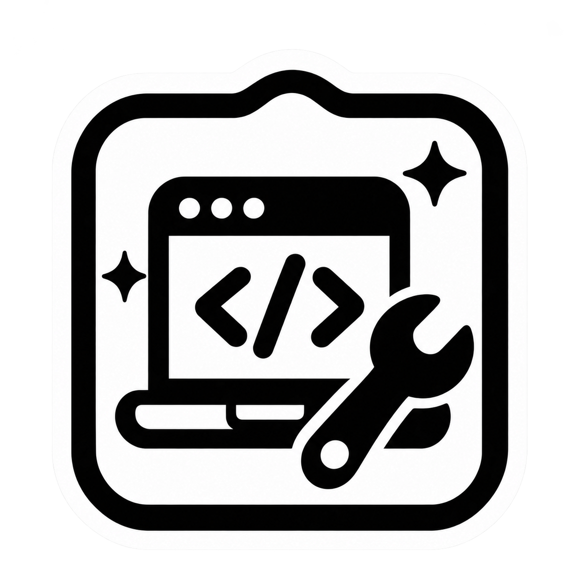
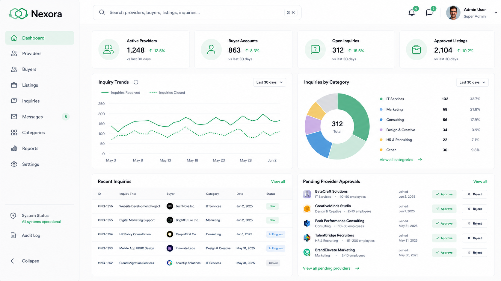

Master Desarrollador Full-Stack
Aprende a programar desde cero con un método 100% práctico guiado por expertos del sector.
Desarrolla las competencias técnicas para construir aplicaciones web completas, desde la interfaz hasta la lógica del servidor. Con el Máster en Desarrollo Full Stack de Conquer Blocks aprenderás a trabajar con tecnologías de Frontend, Backend, bases de datos y herramientas de desarrollo profesional. Una formación práctica y progresiva, basada en proyectos reales, que te permitirá comprender el ciclo completo de desarrollo de software y prepararte para los retos del sector tecnológico.
Empieza ahora ↗

Aprende desde 0
No necesitas tener conocimientos previos, en nuestro Master nos aseguramos de que todos los alumnos empiecen aprendiendo y repasando lo más básico para ir aprendiendo a buen ritmo.

Proyectos prácticos
Durante el Master realizarás más de 10 proyectos prácticos que te servirán como curriculum y experiencia demostrable ante las empresas del sector.

Formación online
Nuestra academia es 100% Online, tendrás acceso por tiempo ilimitado al curso y contarás con el seguimiento, las tutorías y las clases en directo que imparte nuestro equipo.
Garantía de trabajo
Confiamos en nuestro método; formamos talento altamente demandado y te preparamos de manera intensiva para que tengas trabajo nada más graduarte.

Desarrolla el Futuro Digital
En un mundo que depende cada vez más de la tecnología, tener un Máster en Desarrollo Web Full Stack te permitirá dominar las tecnologías más relevantes y esenciales. Con este máster, aprenderás a desarrollar tanto el front-end como el back-end de aplicaciones web, preparándote para ser un profesional integral en el mundo digital.
Skills & programas
Descubre las habilidades y competencias que desarrollarás a lo largo de tu formación. Con nuestro Master adquirirás las skills necesarias para destacar en el sector tecnológico.


Plan de Estudio
Explora un temario completo, actualizado y orientado al mundo profesional, que combina teoría, práctica y proyectos reales. Avanza a tu ritmo, domina las tecnologías más demandadas y desarrolla las habilidades necesarias para impulsar tu futuro en el sector tecnológico.
Programación
01 Pseudocódigo
02 Linux y la Terminal
03 Python
04 Git y GitHub
05 SQL
06 IA y Agentes
Desarrollo Frontend
07 HTML
08 CSS
09 JavaScript
10 ReactJs
11 SQL
Desarrollo Backend
12 Django
13Desarrollo con agentes CLI
14 SEO
15 Despliegue
16 SQL
17 IA y Agentes
Desarrollo Profesional
18 Metodologías ágiles y Scrum
19 Preparación de entrevistas
20 Soft Skills
21 Proyecto Final Master
Proyectos prácticos incluidos en el Master
En Conquer Blocks, aprender significa poner en práctica tus conocimientos desde el primer día. A través de proyectos reales y desafíos profesionales, desarrollarás habilidades técnicas, ganarás experiencia y construirás un portafolio que enriquecerá tu currículum y mejorará tus oportunidades laborales.

Marketplace B2B: Pagos y Dashboard Analítico
60+ horas de desarrollo creando APIs con Node.js, bases en PostgreSQL y un front-end interactivo en React con TailwindCSS.

SaaS de Gestión: Arquitectura y Datos en Vivo
45+ horas diseñando interfaces con Next.js, e implementando autenticación JWT y WebSockets para sincronización en tiempo real.